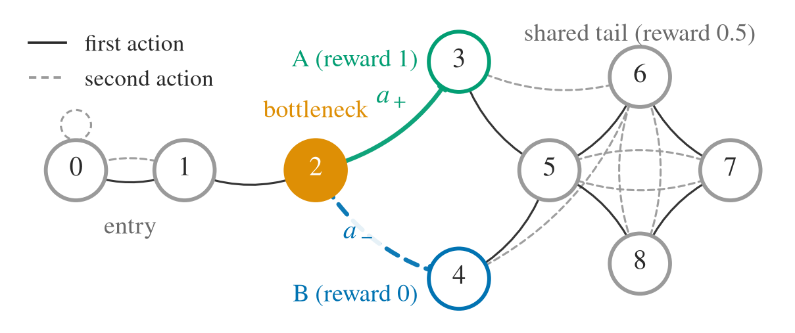
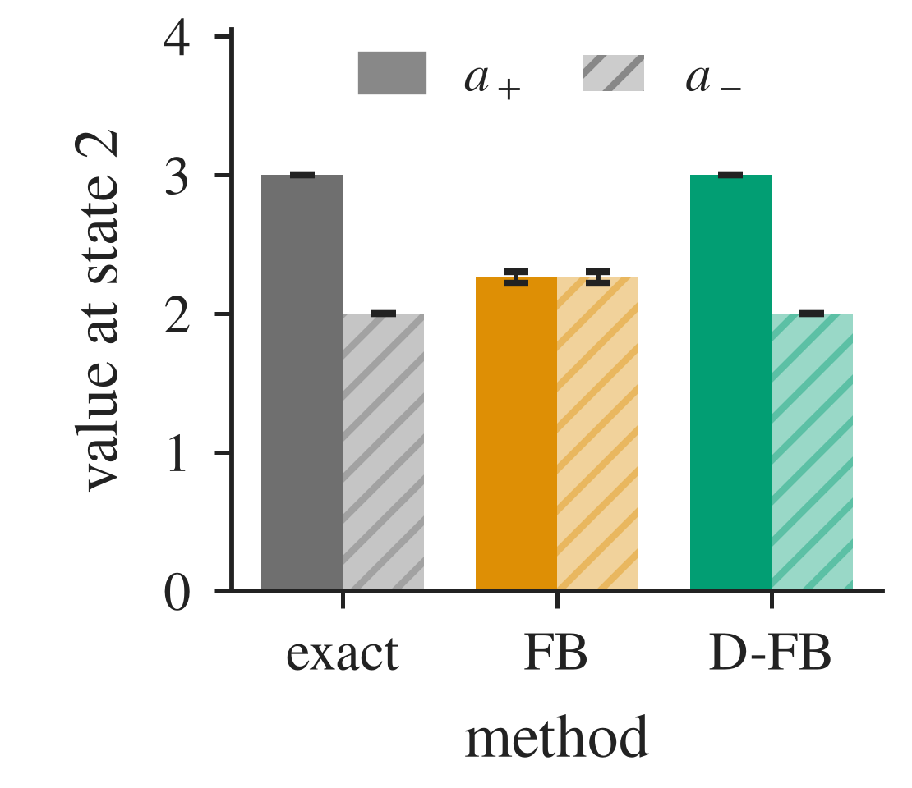
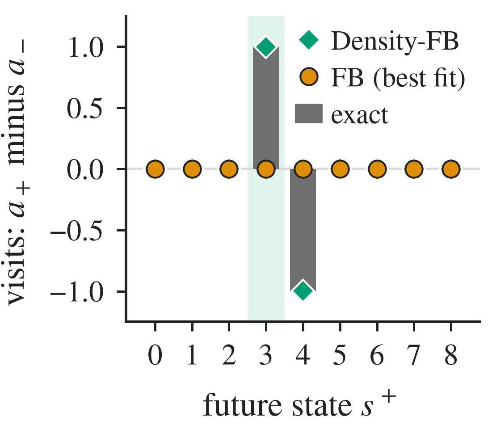
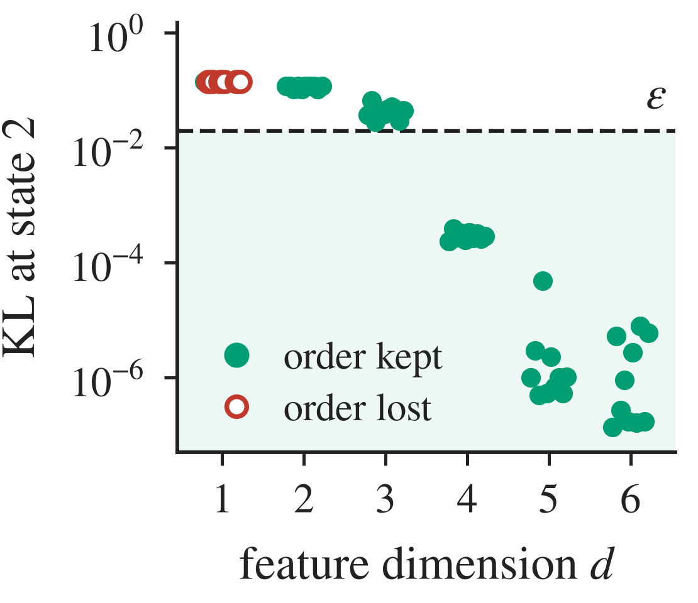
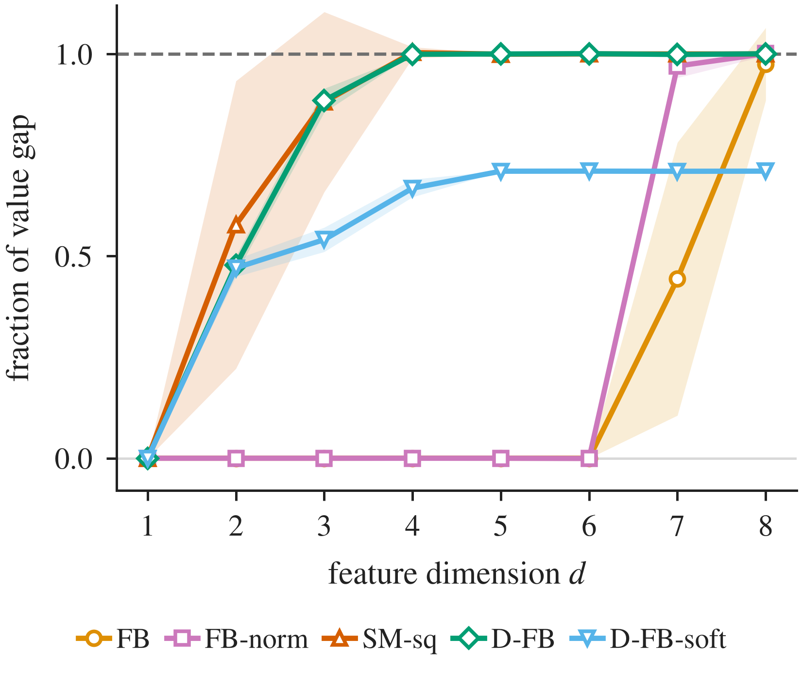

Density Matters: Normalized Successor Measures for Zero-Shot Control
cube-single, same start and goal (star).
Heat map: where the critic expects the cube to be in the future (darker = more time; FB's negative values set to zero).
FB predicts a future spread over the whole table and carries the cube away from the goal; Density-FB predicts the goal and places the cube there.
Over 320 such starts with the cube in hand (64 states × 5 goals), Density-FB reaches the goal in 78% and FB in 23%.
Overview
- Forward–Backward (FB) representations give zero-shot policies that do well on locomotion but fail at pick-and-place: the policy reaches the cube, then fails to keep its grasp or to carry the cube to the goal.
- The cause is control bottlenecks: states where the choice of action decides which futures stay reachable. There, FB's low-rank least-squares fit can give a good and a bad action the same value, even at its optimum.
- Density-FB turns FB's output into a probability distribution over future states and trains it with a cross-entropy TD target. It beats FB on every manipulation task, with median per-task gains of 63.2 / 30.0 / 8.5 points of success on OGBench / MetaWorld / ManiSkill.
Control bottlenecks
A successor measure $M^\pi(s,a,\cdot)$ is the discounted distribution of future states when the agent takes action $a$ in state $s$ and then follows policy $\pi$. Any reward's action value is an expectation under it: $Q_r^\pi(s,a) = \int r\, dM^\pi(s,a,\cdot)$. FB approximates the successor measure with a low-rank product $F(s,a,z)^\top B(s^+)$, fit by least squares. The best such fit projects each successor density onto the span of the backward features $B$. If two actions' future-state distributions differ only in a direction orthogonal to every feature, their projections coincide, and FB gives both actions the same value.




Density-FB
Density-FB keeps FB's two networks, $F_\theta(s,a,z)$ and $B_\theta(s^+)$, but reads their product as a score instead of a density. A softmax over candidate future states, with temperature $\tau$, turns the scores into a probability distribution. The low-rank constraint now sits on the log-density, so the prediction is no longer confined to the span of $B$.
Critic
On a minibatch of $n$ transitions, the next states $s^+_j := s'_j$ serve as the candidate futures. The critic predicts the discounted distribution of future states from $(s, a)$ under task $z$, over these candidates:
The TD target puts weight $1-\gamma$ on the observed next state and weight $\gamma$ on the target network's prediction $\bar p$ from that next state, with the next action drawn from the current policy. The critic fits this target by cross-entropy:
Actor
The value of an action is the expected reward under the predicted distribution:
During pretraining, each task vector $z$ defines its own reward through the backward features, $r_z(s^+) = (B(s^+) - \hat\mu)^\top z / \sqrt{d}$, where $\hat\mu$ is the running mean of $B$ and $d$ the feature dimension. The actor $\pi(\cdot \mid s, z)$ maximizes $\hat Q_{r_z}(s,a,z)$ with behavior regularization.
Zero-shot control
For a new reward, a task vector $z_r$ is inferred from reward-labeled offline states. The frozen policy $\pi(\cdot \mid s, z_r)$ is then executed without further training.
Which part matters
On the bottleneck example above, we swap one ingredient at a time and measure how much of the true action-value difference each critic recovers.

Results
Success rate (%), mean ± SE over five seeds. Benchmark rows average the tasks. Bold marks the best mean and others within its SE; Δ is Density-FB's relative change over the best baseline.
GCIQL, CRL and QRL are goal-conditioned methods; FB, HILP, RLDP and Density-FB are zero-shot successor-representation methods.
Density-FB can condition its policy on a goal state or on a task vector inferred from reward samples; the table reports goal conditioning on OGBench and inferred task vectors on MetaWorld, ManiSkill and ExoRL.
With inferred task vectors on OGBench, Density-FB reaches 82.9 / 31.7 / 54.0 on cube-single / cube-double / scene, still above every successor-representation baseline.
| Task / domain | FB | HILP | RLDP | GCIQL | CRL | QRL | Density-FB | Δ |
|---|
ExoRL (DMC returns)
On dense-reward locomotion without interaction bottlenecks, Density-FB has the highest mean return, leads on quadruped and point-mass, and trails FB on walker and cheetah.
| Task / domain | FB | HILP | RLDP | Density-FB | Δ |
|---|
BibTeX
@article{mohan2026density,
title = {Density Matters: Normalized Successor Measures for Zero-Shot Control},
author = {Mohan, Aditya and Shen, Tongle and Feng, Fan and Agarwal, Siddhant and
Chuck, Caleb and Eysenbach, Benjamin and Zhang, Amy},
journal = {arXiv preprint arXiv:XXXX.XXXXX},
year = {2026}
}